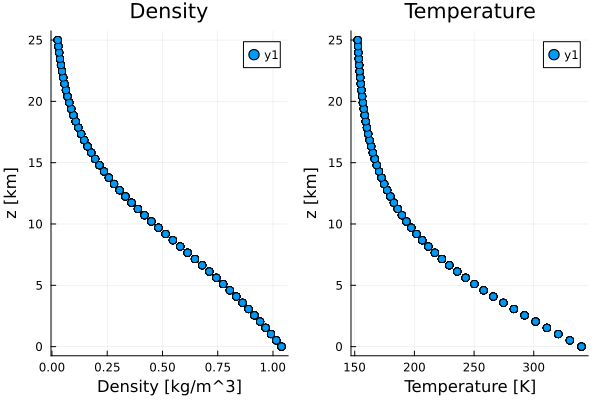

Tested Profiles
Thermodynamics.jl is tested using a set of profiles specified in src/TestedProfiles.jl.
Dry Phase
import Thermodynamics as TD
import Plots
import ClimaParams as CP
import Thermodynamics.Parameters as TP
FT = Float64
param_set = TP.ThermodynamicsParameters(FT)
profiles = TD.TestedProfiles.PhaseDryProfiles(param_set, Array{FT});
(;T, ρ, z) = profiles
p1 = Plots.scatter(ρ, z./10^3, xlabel="Density [kg/m^3]", ylabel="z [km]", title="Density");
p2 = Plots.scatter(T, z./10^3, xlabel="Temperature [K]", ylabel="z [km]", title="Temperature");
Plots.plot(p1, p2, layout=(1,2))
Plots.savefig("tested_profiles_dry.svg");"/home/runner/work/Thermodynamics.jl/Thermodynamics.jl/docs/build/tested_profiles_dry.svg"
Moist Phase in thermodynamic equilibrium
import Thermodynamics as TD
import Plots
import ClimaParams as CP
import Thermodynamics.Parameters as TP
FT = Float64
param_set = TP.ThermodynamicsParameters(FT)
profiles = TD.TestedProfiles.PhaseEquilProfiles(param_set, Array{FT});
(;T, ρ, q_tot, z) = profiles
p1 = Plots.scatter(ρ, z./10^3, xlabel="Density [kg/m^3]", ylabel="z [km]", title="Density");
p2 = Plots.scatter(T, z./10^3, xlabel="Temperature [K]", ylabel="z [km]", title="Temperature");
p3 = Plots.scatter(q_tot*1000, z./10^3, xlabel="Total specific\nhumidity [g/kg]", ylabel="z [km]", title="Total specific\nhumidity");
Plots.plot(p1, p2, p3, layout=(1,3))
Plots.savefig("tested_profiles_virt_temp.svg")"/home/runner/work/Thermodynamics.jl/Thermodynamics.jl/docs/build/tested_profiles_virt_temp.svg"